线性变换 | Linear Transformation
变换,,也可以理解为通常的函数,,或映射,,。
定义
定义一个向量 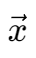，有变换 T，使变换后向量 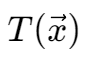 为原向量的像,,。
一个变换是线性变换的条件：
- 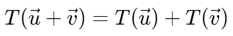
- 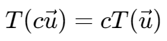
有向量 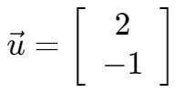，变换定义 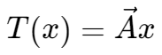，此处 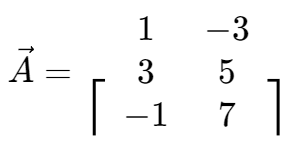，
则向量 u 在变换 T 下的像为：
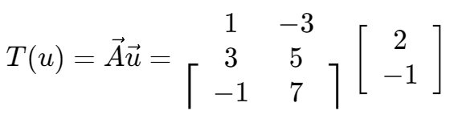
一个小例子
剪切变换 | Shear Transformation
对于一个 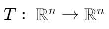，称之为剪切变换。

对于一个标量 r，定义变换 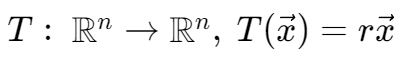
- 当 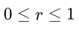 时，T 为收缩,,
- 当 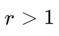 时，T 为膨胀,,